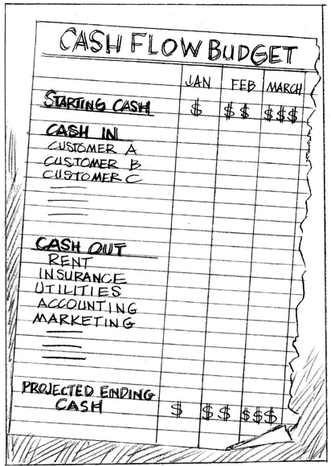

CHAPTER 5
Your Cash Flow Statement Is Speaking
Can You Hear It?
Just as a speedometer doesn’t tell you everything you need to know about the condition of your car, the Net Income Statement doesn’t give you the full picture of the condition of a business. Did you know a business can be showing a profit and still be going bankrupt? It’s true. If you doubt me, just ask the character George Bailey in the Frank Capra movie It’s a Wonderful Life.
Every Christmas, the networks dust off this classic and it never gets old. George Bailey, played by Jimmy Stewart, is manager of the Bailey Building and Loan. On Christmas Eve, he is devastated to discover that his Uncle Billy has lost an $8,000 cash deposit on his way to the bank. This was the entire cash position of the company, which in those years might as well have been $80 million. In one careless moment, the Building and Loan is about to close its doors, bankrupting almost everyone in town.
George becomes desperate. After vainly attempting to drown his woes at the local pub and then crashing his car into a tree, our hero staggers over to the suspension bridge in the freezing cold. Before he can jump to his demise, he hears a splash and a cry for help, and dives in to save a drowning man. While they dry off, the rescued man introduces himself as George’s guardian angel, Clarence, and explains that he jumped into the river to save George from suicide.
“It’s ridiculous of you to think of killing yourself for money!” Clarence scolds. “$8,000.”
“… How do you know that?” George asks.
“I told you, I’m your guardian angel,” says Clarence, leaning into George’s face. “I know everything about you … Let me help you.”
“You don’t happen to have 8,000 bucks on you?” George replies sarcastically.
“Oh no,” scoffs Clarence. “We don’t use money in heaven.”
“Oh yeah, that’s right. I keep forgetting,” George retorts. “Comes in pretty handy down here, Bub!”
Yes, cash comes in pretty handy down here indeed. In this chapter, you’ll learn why cold, hard cash matters so much. You’ll also learn how to keep track of it, something most small business managers don’t do until it’s too late.
WHY CASH FLOW IS IMPORTANT
If you’ve ever given blood, you know what happens. You lie on a gurney, a needle is inserted into your vein, and your blood gets pumped out. But did you notice? The phlebotomist never pumps all the blood out of your body. Why? Because if they did, you would die.
Cash is to your business as blood is to your body. The definition of bankruptcy is running out of cash—not net revenue, not profits, but cash. Managing cash is mission critical to keeping a small business alive. Cash is like fuel in your car—it’s what keeps your business running. Cash pays all the expenses. That’s why we likened the Cash Flow Statement, which indicates the amount of cash you have in the bank, to the gas gauge on the financial dashboard in Chapter 1. If there’s not enough cash to run the business, the business stops. Cold. Consequently, there is urgency in learning how to read your Cash Flow Statement—your gas gauge—so you can measure how much cash is left to run the business. By managing the cash position of the business carefully, you protect its future and prevent it from becoming dependent on creditors to remain solvent.
NET REVENUE AND CASH ARE NOT THE SAME THING
The Net Income Statement does not tell you what cash you have available to run your business. Contrary to what you may assume, the net revenue listed on your Net Income Statement is rarely the same as the cash balance in your bank account. When the business rings up a sale, the net revenue generated may or may not fully convert into cash. If you sell ice cream cones, you usually get paid right away. This chapter is not for those cash businesses. But if you invoice your customers, you can’t make the mistake of assuming net revenue and cash are the same and that they accumulate at the same time. The cash payments from invoices outstanding may materialize at some point in the future, but not in the month they were booked. Or perhaps not all of net revenue will convert to cash because of discounts taken or customers who can’t pay their bills. If net revenue does not convert to cash in time or at all, it could create a cash crisis that threatens the life of the business.
Why Net Revenue and Cash Can Differ
There are four basic reasons that could create discrepancies between net revenue and the cash in the bank account of the business. The first reason (in several scenarios) is that the discrepancy is a function of your payment terms and invoicing process:
• The business sells a product or service and ships the goods or provides the services on credit to the client. The client agrees to pay the bill at some point in the future. This sales transaction shows up as net revenue on the Net Income Statement. However, the customer still owes payment. Until that cash arrives, the business does not have the cash from that sales transaction. Not until the client pays the bill and the check clears does it show up on the Cash Flow Statement.
• There may be more than a 30-day lag between billing a client and the business getting paid in cash. As with the credit scenario above, the value of the invoice will be captured on the Net Income Statement as net revenue in one month, but the cash won’t come into the business until payment is received the month after.
• Customers don’t pay because the business hasn’t sent the invoice yet. The client has no idea what it owes the business or it has conveniently forgotten it owes the business money. (I’m not kidding. This really happens.)
A second reason your net revenue and cash don’t match hinges on discounting policies.
• Discounts can be taken for many reasons. For example, a customer receives an early payment discount that’s not captured on the Net Income Statement’s net revenue line, but that will be deducted when the bill is paid. (Net revenue is, in fact, sales revenues less any discounts, as we mentioned in Chapter 1. That’s why it’s “net.”) So your net revenue will indicate $500, but your bank account will only receive $450.
• Customers negotiate a payment discount to the original invoice amount if they receive some damaged goods or unsatisfactory service. In this scenario, net revenue is again higher than the final payment in cash will be.
A third reason for the difference will come as no surprise to most of you; client behavior is the culprit. And how wondrous the myriad ways …
• Customers pay with a check that bounces due to insufficient funds in their account.
• Customers delay payment or string out payment over a long period of time, possibly because they do not have sufficient cash to pay their bills. They want a free loan, essentially.
• Customers pay with an intermediary, like PayPal or a credit card. These third parties always take a percentage of the total purchase price for the payment convenience. The business receives most, but not all, of the value of the original invoice. If an online retailer, for example, charges $100 for an item, it might only receive $94 if PayPal or a credit card company (also called “intermediaries” or “third-party payers”) is used to satisfy payment. The third-party payer gets the $6 difference as a commission or interchange fee.
Why, you may wonder, does a business accept credit cards, or PayPal, if it won’t receive full payment? There are three basic reasons: first, each sale will be larger because people spend money more easily when they use a credit card to pay for it (as you surmised); second, it gives cash to the seller right away (useful for paying bills); and third, the seller doesn’t have to chase after the buyer for payment, because that risk has been transferred to the bank that approved the sale in the first place.
• A customer might place an order for goods or services, then file for bankruptcy protection after the goods or services are delivered (and the business has absorbed the costs), but before payment is due. This is a disastrous state of affairs, and it happened to one of my small business clients, a jewelry designer. He sold a $25,000 order to a well-known retailer that burned through all its cash and declared bankruptcy. The designer had borrowed money to buy the gold, silver, and stones to fulfill the order. He shipped the goods in good faith expecting to get paid 30 days after shipment. Less than one month later, the retailer went bankrupt. The designer never got paid and was never able to get the shipment returned either, because that inventory had become part of the bankruptcy proceedings. If you guessed that the designer had to absorb the cost of manufacturing that inventory (the COGS, as we learned in Chapter 2) without ever receiving the cash from the shipment, you’re ready for an advanced degree in small business management. That’s exactly what happened.
• To add insult to injury, if a customer does pay its bills to the business and then files for bankruptcy within 90 days of that payment, under the “Preference Payment” rules, the trustee overseeing the proceedings might seek court intervention to return that cash payment to the debtor’s estate. In short, even after a business gets paid, the cash payment is not assured until that 90-day post-payment window has passed. I can’t make this up. A great friend who is a partner in a law firm that specializes in credit and collections in New York City put me wise to this legal loophole.
The fourth and final reason that the monthly net revenue captured on your Net Income Statement and the amount of cash available in your bank account may differ involves the way the cost of capital equipment is captured on the Net Income Statement—that is, how the cost of depreciating assets is handled.
• Your business buys a new computer, paying cash up front for the full cost of a piece of equipment. Cash decreased the total value of the purchase right away, which will be reflected on the Cash Flow Statement. The Net Income Statement, however, will only expense or recognize a portion of that total cost in the form of depreciation expenses each year, until the total cost is realized over the useful life of the computer. Why? Because that computer has to be replaced within a few short years. The IRS requires the business to depreciate the value of that computer each year according to its useful life, recognizing that depreciation as a non-cash expense on the Net Income Statement.
It’s important that you feel comfortable with the concept of depreciation, so let’s take a look at it in greater detail. The discussion may seem familiar (I hope so), as I talked about it in Chapter 2. There, we were talking about the Net Income Statement and depreciation as a fixed or variable expense. Here, we are discussing how depreciation creates a discrepancy between net revenue and available cash. In the example above, annual depreciation reduces the value of the computer due to wear and tear and obsolescence. Therefore, the expense shown on the Net Income Statement and the cash outlay for that same piece of equipment will be different in the year it was purchased. The cash decreases by the full value of the computer purchase in the month it was purchased on the Cash Flow Statement. But net income will appear higher than it would be if the expense of the equipment were recognized all at once. The Net Income Statement will show only the depreciation expense for the computer in the year it was purchased. Just know, this is another reason why the annual cash flowing out of the business as captured on the Cash Flow Statement may be higher than expenses shown on the Net Income Statement.
As you can see, there are many conditions that create discrepancies between net revenue and real live cash in the company’s coffers. As important as net revenue is, what determines whether or not your business can live to see another day has more to do with what your Cash Flow Statement says, which is how much cash is in the business’s bank account at the end of the week, month, quarter, and year. (You should really be looking at this at the end of every week, by the way. Can’t stress this enough.) If you manage to maintain a positive cash position by the end of each period, the business can stay alive through lean months, even months when the Net Income Statement is showing a loss. If you don’t, however, your business will not survive.
What You Need to Know About Cash Basis and Accrual Basis Accounting
I should mention that the discrepancies between a business’s Net Income Statement and Cash Flow Statement are also affected by whether it is using cash basis or accrual basis accounting to capture how and when sales are made and expenses are paid.
Most small businesses use cash basis accounting because it’s simpler than accrual basis accounting. Cash basis accounting records when cash comes in from customer payments and when cash goes out to pay bills. Under this method, net revenue from sales does not get captured on the Net Income Statement until the client pays the invoice. Likewise, expenses do not get recorded on the Net Income Statement until the bills are paid. This method makes it easy to see the cash position of the business, and causes the Net Income Statement and Cash Flow Statement to track pretty closely.
The problem with cash basis accounting is that it does not provide the most accurate picture of the timing of when profits and cash are generated. First, it doesn’t accurately capture the sales cycle—that is, when customers actually purchase a product or service. It only captures when customers pay their bills, which could be several weeks or months after the actual date of purchase. This can make the months in which customers pay their bills look far more profitable than they actually are. Second, cash basis accounting effectively blinds the business to upcoming transactions when cash will be coming into and going out of the business. For example, it doesn’t show the cash that should be received from future client payments (“receivables”). Nor does it show cash that will be going out of the business to pay expenses against obligations the business already has (“payables”). I’ll cover receivables and payables in greater depth in Chapter 7 when we go through the Balance Sheet in great detail. For now, just know that cash basis accounting doesn’t capture the obligations of the business to pay bills or to the business of customers who owe it money. That is, if the cash event has not occurred yet, it’s invisible. But these future cash events will have a profound effect on the amount of cash available to run the business. Cash basis accounting can blindside a small business manager unless he or she is careful.
For example, I did some consulting work for a dot.com years ago in NYC. When I asked one of the principals how many months the business could operate on their current cash reserves, he said, “18 months.” This meant the business could pay all its expenses for 18 months without having to earn one dollar of net revenue. I was impressed—that’s a pretty strong cash position for a start-up company. Then I talked to the bookkeeper. Come to find out, the company had subcontracted dozens of programmers, who were working long, hard hours. They had not yet been paid, and their fees were rapidly racking up. The bookkeeper told me the company, in fact, had over $500,000 in unpaid expenses—an astronomically high number for a business that was not generating any net revenue, positive net income, or cash. It was clear the business only had three months, not 18 months, of cash to operate and to pay its expenses.
Their cash basis accounting system did not show the managers that the cash to pay the programmers had, in essence, already been spent even though the checks had not been written yet. Had the business been using accrual basis accounting, this growing aneurism of expenses would have shown up in the accounts payable section of the Balance Sheet (we cover the Balance Sheet in Chapter 7) and the cash would have been allocated accordingly.
Accrual basis accounting captures sales and expenses as they happen regardless of when the cash event occurs. Net revenue is booked when the goods are shipped out the door or invoices sent, not when payment is received. Similarly, expenses are booked when bills and invoices from suppliers or subcontractors are due, not when the business pays them. This tracks the timing of customer purchases and payments and the timing of when expenses are due more accurately. Accrual basis accounting solves the timing discrepancies of when a business’s net revenue and expenses are captured and the cash is available to run the business. This is why the Net Income Statement and Cash Flow Statement will not track as closely with accrual basis accounting. Accrual basis accounting is the more conservative approach to keeping the books. There are no unhappy surprises with this method.
Accrual basis accounting provides a much clearer and comprehensive view of what the true cash position is for the business. (Your accountant will know all about this. Ask him or her which is being used.) For this reason, I recommend that every business, especially those that generate over $100,000 in net revenue each year, use accrual basis and not cash basis accounting, if possible. If the business you manage generates $5 million or more in net revenue, accrual basis accounting may be required by law. Ask your accountant to fill you in on this and any other legal stipulations. At least now, when you hear these terms, they will not be a mystery to you.
HOW THE CASH FLOW STATEMENT WORKS
By now you know that you can’t take cash for granted. You have to manage your cash position, and it’s actually quite simple. Your Cash Flow Statement, like your gas gauge, will tell you exactly how far the business can travel before it needs to fill up again. Everything on the Cash Flow Statement of the business only gets captured when cash changes hands; either payments are received or expenses are actually paid.
The Cash Flow Statement looks a lot like your checking account statement for your business. The business starts with a beginning balance of cash, we call that “Beginning Cash.” Then cash comes into the business from various sources. That’s “Cash In” (or “Cash Received”). Then the business uses up cash to pay expenses. That’s “Cash Out” (or “Cash Expenses”). After all those inflows and outflows of cash are captured, and added and deducted from Beginning Cash, the business is left with “Ending Cash.” That’s pretty intuitive. Here’s a simple example of a Cash Flow Statement by month for a fictitious photography business, One-Woman Photos:
Cash Received
Let’s start with January and interpret what happened. This Cash Flow Statement tells us that One-Woman Photos began the year with $10,000 in the account for the business. The next line tells us that some cash payments came in to the business—$3,000 to be exact. Most likely, these were payments from invoices she sent out in November or December. The checks cleared and the photographer/business owner—we’ll call her “Darla”—was able to deposit the cash into her account. That’s a beautiful thing. That’s Cash In.
Cash can come into the business for a variety of reasons, most likely the following:
1. Clients pay their bills. Yippee!
2. The business receives a refund or rebate of some kind. This is good, but it’s usually a one-time event, so it’s probably not enough to be a significant and predictable source of cash in the future.
3. The business invested some excess cash and that investment generated some interest, which was deposited in the business account. When the interest rates banks offer on savings accounts is low, this return on savings is negligible. When bank interest rates are high, as they were in the early 1980s, a return on cash savings might be significant.
As you can see, those first two items on the Cash Flow Statement are pretty straightforward. You now know the Beginning Cash balance and what cash came into the business in January.
Expenses
The next items on the Cash Flow Statement represent cash going out of the business to pay for expenses, or Cash Out. The photography shop has a monthly fixed expense of $5,000 for rent. It also has an insurance expense due in January—$2,000. This too is a fixed expense, but unlike rent, it is paid once annually, rather than monthly.
Take note that not all expenses are paid every month. Car insurance, for example, is usually paid semiannually (twice a year). Liability insurance (to protect people from mishaps on the premises of the business) is usually paid once a year. Thankfully, most of these less frequent expenses are fixed and predictable. Because fixed expenses like rent are stable month after month, you know you’ll see the same numbers reflected on your Cash Flow Statement. Indirect variable expenses, as you know, tend to vary (hence the name—clever, those accountants) according to the volume of net revenue the business generates. Marketing expenses fall into this category, as do website expenses and employee salaries. These variable operating expenses are a bit more difficult to predict, but some of them can be controlled. For instance, a small business manager can choose to hire employees or to invest in an online marketing campaign or not.
Ending Cash
The Cash Flow Statement captures the expenses paid out of the business in the month the checks are written—that is, when the cash event has occurred. After deducting expenses paid or Cash Out from Beginning Cash and adding payments received as Cash In, the final line of the Cash Flow Statement shows the Ending Cash balance for the month. In Darla’s case, in the Cash Flow Statement for January, she started with $10,000; she received $3,000 in payments and paid expenses to the tune of $7,000—leaving her with a cash balance of $6,000 at the end of the month.
Notice that January’s Ending Cash balance becomes the Beginning Cash balance for February. It makes sense, no? February started with $6,000. The business collected $4,000 in Cash In, paid out $5,000 in expenses or Cash Out, and showed a balance of $5,000 at the end of February.
Now, what would have happened if Darla had received no cash payments during the month of February?
| February Cash Flow | |
| Starting Cash | $6,000 |
| Cash In | 000 |
| Cash Out | $5,000 |
| Ending Cash | $1,000 |
Starting cash for March would have been $1,000, not $5,000. Now imagine that the business started March with only $1,000 and then received no cash coming into the business in March, with $5,000 owed in expenses. That’s a perfect example of a cash crunch. To cover expenses after just two months with no incoming cash, the business would either have to take out a loan or close its doors. Now you know why most small business managers have insomnia.
BUDGETING CASH THE EASY WAY
So here’s where the Cash Flow Statement becomes an incredibly valuable business management tool. Now that you know what the Cash Flow Statement is saying, you can take that information and start to forecast the cash flowing in and out of the business. Instead of driving blindly, not knowing how much cash is available at the end of each month to run the business, you can anticipate quarterly and yearly cash needs and manage them before a cash crunch hits. The Holy Grail of cash flow management is accurately predicting when cash flow will be tight and creating a budget that will cover the business’s cash needs in those periods.
Don’t be intimidated—building a cash flow budget is not difficult. At the end of each year, simply ask your accountant to print out the year-end Net Income Statement and Cash Flow Statement for you. Then use these as your baseline to predict cash flow for the year ahead. You can create a spreadsheet on the computer or write it down by hand. Put the 12 months of the year across the top, and put “Cash In” and “Cash Out” down the left column.
Start by listing your expenses, when they are due, and how much they are likely to be, based on the previous year’s numbers. Rent, Web-hosting costs, salaries, and electricity should be pretty simple to predict (fixed expenses, a.k.a, your “monthly nut”). Legal and accounting expenses will probably be obvious too, assuming you have no outstanding audits or lawsuits. Plunk any non-monthly expenses, like insurance expenses, in the months you think they’ll need to be paid.
Next, estimate the variable expenses you know will come. Phone expenses, freelance expenses, travel and entertainment, supplies, equipment repairs, marketing, and Web support—even the staff holiday party—are all typical variable expenses to include. Be sure to cover all the categories it takes to run the business, from soup to nuts. To estimate these expenses accurately, look at last year’s expenses in those categories and consider whether or not they will be higher or lower in the coming year. Be conservative. If you think there are reasons they’ll be more expensive (that’s a no-brainer; they will be!) or that you'll have more of them (you may well!), round the estimate up.
Next comes the fun part: projecting cash coming into the business. This is a little more challenging, because it depends on how effective your sales efforts are, when clients pay their bills, how they pay their bills (are they taking discounts; are they using third-party payment providers), and, of course, if they pay you. Here are two good rules of thumb for predicting Cash In:
1. Assume at least a 30-day time lag between when sales are booked as net revenue on the Net Income Statement and when those sales convert to Cash In on your Cash Flow Statement.
2. Assume that only 90 percent of the revenue booked on your Net Income Statement will convert to Cash In, whether due to intermediaries who take their cut or for other reasons, discussed earlier.
Your Net Income Statement can help you get a ballpark estimate of how next year’s net revenue is likely to look each month. From there, you can predict that around 90 percent of that net revenue will convert to Cash In on your Cash Flow one month later. Write those predictions down in your cash flow budget.
For example, One-Woman Photos typically takes senior pictures in March for the yearbook trade. She invoices the clients when she gets the proofs back in April, and the clients pay in May or June. The revenue from these sales is captured on her April Net Income Statement when the invoices go out, but Darla books the cash in May or June when she receives and clears the checks from the clients. If Darla is trying to predict when she’ll receive cash from her busy senior picture season, she has to account for that time lag. If she can reasonably estimate what her revenue for the coming April will look like, she can write down 90 percent of that number as Cash In for May or June of her cash flow budget.
Once you’ve predicted the expenses (Cash Out) and payments received (Cash In) for the business, you can identify when the Ending Cash is probably going to be dangerously low. These are what are affectionately referred to as “lean months.”
For example, we saw that Darla’s various insurance premiums (liability, health, theft, etc.) for the business come due in January, and it’s a pretty hefty sum. In the photography business, there isn’t a lot of net revenue generated from sales in January because customers are trying to digest Christmas expenses and are not in a buying mood. At the same time, there’s a lot of cash going out to cover the large insurance premium. Darla knows she probably won’t recoup that with cash coming in over the next month or two.
This is where she needs to use good judgment on how to pay expenses and to keep a tight control on cash until her Cash In picks up again in the spring and summer, which it usually does. For example, Darla may be able to negotiate a delay in the payment of other expenses or to break payments up into smaller monthly sums to help conserve cash in that lean quarter. Darla also needs to exercise some spending discipline and not buy that discounted backdrop in the first quarter of the year, even though it’s tempting to take advantage of all those discounts. If her Ending Cash balance from December indicates she’s got enough to pay for it without putting the business on life support, then fine.
As I said before, every business has lean months. There’s seasonality to customer purchases. Most businesses have very hectic periods and slow periods. The hectic periods when net revenue is strong are the times to invest in the business. That’s when the business generates the most sales and then, a month or two later, the most Cash In.

During the slow periods, it’s wise to keep a super tight grip on expenses, not just on the size of expenses, but when you pay them. Don’t pay anything you don’t have to until the Cash In from customer payments starts to pick up. This will reduce the amount of borrowed capital (and accompanying interest expense) needed to run the business. It will also better manage the timing of the business’s Cash In to Cash Out and help to avoid bankruptcy in the face of unanticipated expenses (the roof leaked, yikes!) or unanticipated drops in Cash In thanks to customers who have fallen on tough times.
CASH-BURNING TRAPS TO AVOID
Here are some common ways small businesses burn through cash and tromp down hard on the bankruptcy gas pedal. Although I only mention a handful, I could have written volumes on this topic alone.
Avoid Hiring Consultants Without Establishing Measures of Success
Dana, the developer of amazing proprietary software, made this mistake. Her business should be generating $20 million in net revenue per year. She should be working with every Fortune 500 company around the world. Instead, she is struggling to keep the lights on in the office. Dana hired a PR agency that was supposed to support sales efforts and generate net revenue. The PR agency kept saying it “just needed a few more months” to get the job done. They used that excuse for three years. At $1,000 per month, you can quickly calculate how much money she invested in this charade. The truth is, public relations efforts take time to show results, but a well-planned effort should begin to show results within three to six months.
Build in accountability! Determine in advance how you are going to measure the effectiveness of their efforts—and in what time frame. One measure of success could be how many people heard, read, or experienced your brand as a direct result of public relations promotions. Another measure of success could be growth in net revenue. If those metrics are not met after a reasonable period of time, fire the PR firm.
Avoid Hiring a Sales Rep with No Accountability
John, an architect, hired a fast-talking salesperson who managed to negotiate an annual fixed salary of $150,000 plus benefits—before generating one penny of net revenue. After being on the job for four years, the salesperson still hadn’t even covered half the salary and benefit costs to the business. (Remember that the cost to hire a full-time employee is roughly double what their salary is.) So John’s fully loaded cost to carry the salesperson’s salary and benefits is, conservatively, $250,000 per year. Multiply that whopping quarter mil by four years, and you get a total expense to the business of $1 million. That’s real money where I come from.
If you choose to hire a full-time salesperson or sales rep firm, be clear on how you will measure their effectiveness and in what time frame. Don’t be afraid to ask when you can expect to see these results. And tie at least some portion of sales compensation to delivering those results. Everyone should be incentivized to do a great job.
Avoid Hiring Offshore Talent
Many small businesses hire resources halfway around the world because the hourly rates are so much less than they are in North America. But when you hire an offshore resource, you put the business into the hands of people in another time zone, outside your supervision, who speak a different language, have different cultural values, and may or may not be qualified to do the job you hired them for. What I have found is while the hourly rates are low, they can take twice as long to complete a task. The result is you’ll burn through more cash than you expected and lose precious REM sleep too, thanks to those 3 A.M. conference calls.
Think twice, and then think again before you go this route. With all deference to Tim Ferris, entrepreneur and best-selling author, who is a big advocate of this, I’ve never been satisfied with the results. I took his advice and regretted it $1,500 and one month later. And yes, I consider sleep sacred.
Avoid Building a Website Too Advanced for You to Handle
Software options are changing everyday and it’s daunting to know what is best for the business you manage. Techies like to use the coolest, newest software out there. Well, the software may be cool, but often it’s unproven. As I learned the hard way, unproven software increases the risk of site crashes if you upload video, audio, or miss breakfast. When glitches occur—and they always do—you’ll have to hire very expensive software programmers who need to build custom code to integrate this software with your mobile app or website and retrain your webmaster to update it. At $150 per hour, you’ll see thousands fly out the door in the blink of an eyeball. This process has additional risk: you’ll spend too much of your time managing the Web project and away from revenue-producing activities like calling customers.
Avoid Pursuing the “Magic Bullet” of Online Advertising and Social Media
Online advertising and social media programs can be very seductive, but they can also rack up expenses quickly and create major time drains if not managed effectively. Online marketing consultants who develop and run your online campaigns also represent risk, as does hiring an SEO (search engine optimization) expert. You pay these people big bucks, whether or not the site statistics improve and irrespective of any increase in your net revenue. You’ll see a whopping increase in operating expense.
You can't avoid the Internet and social media, but you must be sure you know how to measure success with these programs—and know when to pull the plug if one or more of them are not delivering real value to the business.
There are other ways to burn through cash, of course, and I hope you avoid most of them.
Don’t get me wrong—I’m not telling you never to hire consultants, off-shore talent, or hip Web designers. I’m telling you to treat the cash you invest in these people like vital lifeblood. For the sake of business survival, these cash investments must generate sufficient Cash In back into the business at a timely rate. In a recession, every penny matters. So does risk of performance. Establish clear benchmarks for performance, and make sure your salary contracts do not bind you to keep paying low-performing employees. Keep the business’s website simple and easy enough to handle. Test the market with content first, and wait till visitors are growing leaps and bounds before making the large cash investment to build the big kahuna site. Not everything you try out will be successful, but it’s up to you as the small business manager to control the damage and protect the life of the business. As one very successful entrepreneur told me, the most successful small business managers are not the ones who never make a mistake; they are the ones who make their course corrections sooner. Be one of those.
KEY TAKEAWAYS
 Positive profits do not insulate the business from bankruptcy. Positive, consistent Cash In that is larger than Cash Out does.
Positive profits do not insulate the business from bankruptcy. Positive, consistent Cash In that is larger than Cash Out does.
 Net revenue booked in one month rarely converts into cash the same month.
Net revenue booked in one month rarely converts into cash the same month.
 Net revenue and net income are measured by the Net Income Statement. Cash flow is measured by the Cash Flow Statement.
Net revenue and net income are measured by the Net Income Statement. Cash flow is measured by the Cash Flow Statement.
 Your Net Income Statement and Cash Flow Statement can present very different numbers for cash on hand, depending on when customers buy, when and how they pay their bills, and when the business pays its bills.
Your Net Income Statement and Cash Flow Statement can present very different numbers for cash on hand, depending on when customers buy, when and how they pay their bills, and when the business pays its bills.
 Accrual basis accounting, not cash basis accounting, gives the small business manager a fuller and more accurate view of the cash position for a business. This accounting method captures both receivables and payable transactions that will occur in the future.
Accrual basis accounting, not cash basis accounting, gives the small business manager a fuller and more accurate view of the cash position for a business. This accounting method captures both receivables and payable transactions that will occur in the future.
 The Cash Flow Statement is like the check register for a personal bank account. It measures Beginning Cash, Cash In (payments from customers), Cash Out (expenses paid), and Ending Cash.
The Cash Flow Statement is like the check register for a personal bank account. It measures Beginning Cash, Cash In (payments from customers), Cash Out (expenses paid), and Ending Cash.
 One month’s Ending Cash becomes the following month’s Beginning Cash position.
One month’s Ending Cash becomes the following month’s Beginning Cash position.
 It’s important to view the Cash Flow Statement each week and at the end of each month, along with the Net Income Statement for the month.
It’s important to view the Cash Flow Statement each week and at the end of each month, along with the Net Income Statement for the month.
 The process of budgeting in advance can help reveal what months Ending Cash will be high and what months it will be low during the year. This helps you make course corrections before a cash crunch can threaten the viability of the business.
The process of budgeting in advance can help reveal what months Ending Cash will be high and what months it will be low during the year. This helps you make course corrections before a cash crunch can threaten the viability of the business.
 Assume a 30-day time lag from the time a customer purchases until the time the business receives payment.
Assume a 30-day time lag from the time a customer purchases until the time the business receives payment.
 Assume that 10 percent of outstanding net revenue will never be converted into cash, whether because of the payment method used or because the customer is in a cash crunch. If the business converts all net revenue to Cash In, that’s a blessing. It’s also very rare.
Assume that 10 percent of outstanding net revenue will never be converted into cash, whether because of the payment method used or because the customer is in a cash crunch. If the business converts all net revenue to Cash In, that’s a blessing. It’s also very rare.
 Keeping a tight rein on all expenses will always conserve cash. Conserving cash is the key to thriving in any economy. Now you know why.
Keeping a tight rein on all expenses will always conserve cash. Conserving cash is the key to thriving in any economy. Now you know why.